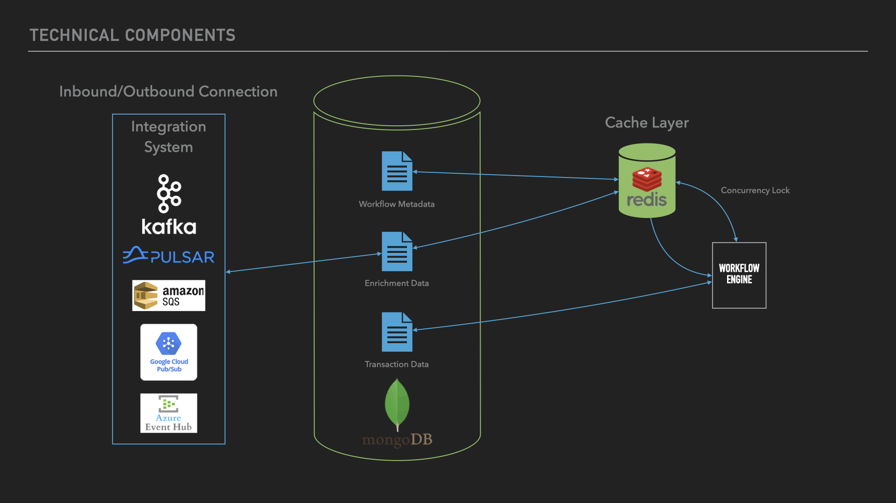

Open Payments
Open Payments is an open-source initiative focused on building a comprehensive toolkit for creating a modern, scalable, and efficient payment processing engine for banks and financial institutions. Our vision is to streamline financial messaging, facilitate interoperability across diverse financial ecosystems, and enable innovation within the payment industry. Open Payments provides robust, open-source components that make it easier for developers and institutions to implement secure and high-performance payment solutions.
What We Offer
-
Message Processor: A powerful orchestration engine that manages and processes financial messages. It enables the seamless execution of payment workflows, from data enrichment and validation to transformation and routing, across multiple systems and services.
-
Messages Library: A feature-rich library designed to handle the intricacies of financial messaging. Our library supports parsing, validating, transforming, and generating financial messages, with current support for widely used formats such as ISO 20022 and FedNow.
-
Messages API: A RESTful API that exposes the capabilities of the Messages Library to external systems. With endpoints for message validation, transformation, and sample generation, it enables seamless integration with existing infrastructures.
-
Message Transformation Library: A versatile library that facilitates the transformation of message formats. Using powerful, configurable transformations, it enables seamless interoperability between different message standards and systems.
-
Samplify Library: Generate realistic, valid sample messages tailored for testing and development. This tool is invaluable for QA engineers, developers, and testing environments, offering flexibility to customize samples per unique testing requirements.
Why Choose Open Payments?
Open Payments offers a robust, developer-friendly framework for payment processing. Our open-source foundation empowers users to extend and customize the solution, whether for new formats, integration with emerging technologies, or unique compliance needs. We emphasize adaptability, reliability, and transparency, enabling financial institutions to leverage a community-driven approach to innovation.
Message Processor

The Message Processor is the core engine of the Open Payments platform, serving as the central nervous system that orchestrates payment transactions seamlessly from initiation to completion. It streamlines the flow of financial messages through a robust, security-first architecture. Each message passing through the system is:
- Enriched: Adds necessary information such as customer verification data and compliance checks, including OFAC screening and AML validations
- Validated: Confirms accuracy and compliance with regulatory and business rules, including Regulation guidelines
- Transformed: Adjusts message formats to meet internal or external standards, supporting ISO 20022, SWIFT, and proprietary formats
- Routed: Directs messages to appropriate systems or networks based on configurable workflows
By efficiently handling inbound messages, applying necessary transformations, and directing them to designated outbound channels, the Message Processor enables seamless integration with a bank's existing systems. Its support for complex, multi-step workflows allows it to adapt to diverse payment formats and regulatory requirements, enhancing interoperability and operational efficiency.
Use Case #1: FedNow Customer Credit Transfer Flow
In this use case, the Message Processor manages a real-time FedNow Customer Credit Transfer, overseeing each stage from initiation by the sender's bank to final settlement at the clearing house.
- Initiation: The sender's bank initiates a credit transfer request formatted according to FedNow specifications. This message is sent to the Message Processor's inbound channel.
- Enrichment: Upon receiving the message, the Message Processor enriches it by verifying customer details, checking the availability of funds, and applying regulatory compliance checks through configured enrichment connectors.
- Workflow Processing: The message is processed based on predefined rules within the workflow configuration. The Message Processor validates the message format and applies any necessary transformations to align with internal standards.
- Clearing and Settlement: After processing, the Message Processor routes the message through the outbound connection to the clearing house for final settlement.
- Response Handling: The processor manages acknowledgments and response messages from the clearing house back to the sender's bank, ensuring end-to-end transaction visibility and confirmation.
Use Case #2: Real-time Payment Processor Integration
In this scenario, the Message Processor functions as an embedded component within a financial institution's internal payment system, managing transactions in real-time before they reach the core banking system.
- Transaction Intake: Incoming payment requests from various channels (e.g., mobile apps, web portals) are received by the processor with guaranteed message delivery and deduplication.
- Initial Screening and Enrichment: The Message Processor performs initial validations and enrichment, such as Know Your Customer (KYC) checks, anti-fraud assessments, and data standardization.
- Processing: Based on preconfigured workflows, the Message Processor validates the message format, applies business rules, and prepares it for core processing. This may include formatting transformations to meet internal standards.
- Routing to Core System: Once validated and transformed, the message is routed to the core banking system for final processing and settlement, with built-in failover and retry mechanisms.
Expanding Capabilities
The Message Processor extends beyond traditional payment processing to serve as a comprehensive solution for message orchestration across financial systems. Its flexible architecture adapts to evolving industry needs, supporting emerging payment methods, real-time settlement networks, and regulatory requirements.
How It Works: Operational Flow
The Message Processor follows a systematic workflow that ensures reliable, secure processing of payment messages. Here's a detailed breakdown of each stage:

1. Inbound Connection
-
Message Reception
- Accepts incoming messages from multiple sources:
- Bank APIs
- Financial gateways
- External systems
- Validates message format and structure
- Assigns unique transaction identifier
- Accepts incoming messages from multiple sources:
-
Queue Management
- Places messages in inbound queue
- Maintains message priority
- Ensures ordered processing
2. Workflow Processor
-
Message Retrieval
- Pulls messages from inbound queue
- Maintains processing order
- Manages throughput based on system capacity
-
Workflow Selection
- Matches messages to appropriate workflows based on:
- Payment type
- Originator
- Geographic region
- Message attributes
- Retrieves workflow definition from storage
- Matches messages to appropriate workflows based on:
3. Workflow Execution
The system processes messages through a flexible combination of:
- Enrichment tasks
- Validation processes
- Transformation operations
These steps can be repeated and reordered based on workflow requirements.
4. Error Management
-
Error Detection
- Monitors processing steps
- Identifies validation failures
- Catches system errors
- Flags data inconsistencies
-
Recovery Procedures
- Implements retry logic for transient errors
- Routes to error queue when needed
- Enables manual intervention
- Maintains processing state
5. Outbound Processing
-
Message Dispatch
- Routes to designated endpoints
- Supports multiple destinations
- Ensures secure transmission
- Verifies delivery
-
Confirmation Handling
- Processes acknowledgments
- Updates transaction status
- Maintains delivery records
- Handles failed deliveries
Workflow Processor: Detailed Component Architecture
The Workflow Processor serves as the core processing engine, orchestrating the entire message handling lifecycle. Here's a detailed breakdown of its key components:

1. Incoming Message Queue
- Primary Function:
- Initial reception point for payment messages
- Message buffering and queuing
- Load balancing support
- Key Features:
- High-throughput message intake
- Traffic spike handling
- Message persistence
- Order preservation
2. Rule Engine
- Core Responsibilities:
- Workflow selection and assignment
- Processing rule application
- Dynamic decision making
- Workflow Matching Criteria:
- Payment type
- Message originator
- Geographic region
- Message attributes
- Business rules
- Integration Points:
- Direct access to Workflow Metadata
- Connection to validation services
- Interface with enrichment systems
3. Workflow Execution Steps
The Workflow Processor supports flexible combinations of three core processing tasks that can be arranged in any order and repeated as needed within a workflow:
Core Processing Tasks
-
Enrichment:
- Customer information addition
- Account detail enhancement
- Regulatory compliance data inclusion
- External data retrieval
-
Validation:
- Data integrity checks
- Mandatory field validation
- Format verification
- Regulatory compliance checks
-
Transformation:
- Format conversions
- Data mapping
- Schema adjustments
The actual sequence depends on:
- Message type requirements
- Business rules
- Regulatory needs
- Destination system requirements
Each step can be:
- Repeated multiple times
- Applied conditionally
- Executed in parallel where appropriate
- Skipped based on conditions
4. Workflow Metadata
- Purpose:
- Workflow configuration storage
- Processing step definitions
- Business rule management
- Structure:
- Workflow definitions
- Processing sequences
- Rule sets
- Configuration parameters
- Access Patterns:
- Rule Engine reference
- Dynamic workflow loading
- Configuration updates
5. Outbound Message Queue
- Functions:
- Processed message buffering
- Destination routing
- Delivery management
- Features:
- Multiple destination support
- Retry handling
- Load balancing
- Message persistence
Workflow Definition Format Specification
Overview
The Workflow Definition format specifies the structure and sequence of tasks required to process a message in the Open Payments system. Each workflow is event-driven, with tasks executing based on the message's processing state.
Specification
Workflow Structure
{
"id": "string", // Unique identifier for the workflow
"name": "string", // Descriptive name
"description": "string", // Detailed description of workflow's purpose
"version": "integer", // Version number of the workflow definition
"domain": "string", // Domain this workflow belongs to
"status": "string", // Status: draft, active, or deprecated
"tasks": [ // Array of tasks in the workflow
{
"task_id": "string", // Unique identifier for the task
"name": "string", // Descriptive name of the task
"description": "string", // Description of what the task does
"trigger_condition": { // Condition for task execution
// Processing state conditions that trigger this task
},
"function": "string", // Function type: Validate, Enrich, or Publish
"input": { // Function-specific configuration
// Configuration varies based on function type
}
}
]
}
Functions
1. Validate
Validates message data against defined business rules.
{
"function": "Validate",
"input": {
"ruleset": "string" // Identifier of validation ruleset
}
}
2. Enrich
Enriches message with additional data.
{
"function": "Enrich",
"input": {
"source": {
"type": "string", // Type of data source
"config": { // Source-specific configuration
// Configuration properties
}
},
"mapping": {
"spec_id": "string" // Identifier of mapping specification
}
}
}
3. Publish
Publishes message to external system, with optional transformation.
{
"function": "Publish",
"input": {
"destination": {
"type": "string", // queue or topic
"name": "string" // Destination name
},
"transform": { // Optional transformation
"schema": "string", // Transform schema identifier
"target_format": "string" // Target format
}
}
}
Example Implementation
{
"id": "FEDNOW_CREDIT_TRANSFER",
"name": "FedNow Credit Transfer Processing",
"description": "Processes FedNow credit transfer messages",
"version": 1,
"domain": "payments",
"status": "active",
"tasks": [
{
"task_id": "validate_payment",
"name": "Validate Payment Data",
"description": "Validates the incoming payment message",
"trigger_condition": {
"processing.status": "received"
},
"function": "Validate",
"input": {
"ruleset": "FEDNOW_CREDIT_TRANSFER_RULES"
}
},
{
"task_id": "enrich_customer_data",
"name": "Enrich Customer Information",
"description": "Enriches the message with customer data",
"trigger_condition": {
"processing.progress.prev_task": "validate_payment",
"processing.progress.prev_status_code": "SUCCESS"
},
"function": "Enrich",
"input": {
"source": {
"type": "customer_database",
"config": {
"lookup_type": "account"
}
},
"mapping": {
"spec_id": "CUSTOMER_DATA_MAPPING"
}
}
},
{
"task_id": "send_to_fednow",
"name": "Send to FedNow",
"description": "Publishes the message to FedNow",
"trigger_condition": {
"processing.progress.prev_task": "enrich_customer_data",
"processing.progress.prev_status_code": "SUCCESS"
},
"function": "Publish",
"input": {
"destination": {
"type": "queue",
"name": "FEDNOW_OUTBOUND"
},
"transform": {
"schema": "FEDNOW_CREDIT_TRANSFER_MAPPING",
"target_format": "ISO20022"
}
}
}
]
}
Key Concepts
Event-Driven Execution
- Tasks execute based on message processing state
- Each task has a trigger condition
- Processing continues until no tasks are triggered
Task Functions
- Validate: Applies business rules to message data
- Enrich: Adds additional data to the message
- Publish: Sends message to external system
Message Processing
- Message state tracked in processing object
- Status codes determine task execution
- Previous task results influence next task
Best Practices
-
Task Naming
- Use clear, descriptive task IDs
- Follow consistent naming convention
- Include purpose in description
-
Trigger Conditions
- Keep conditions simple and clear
- Consider error scenarios
- Handle all possible states
-
Function Configuration
- Use meaningful identifiers
- Configure appropriate error handling
- Document external dependencies
-
Workflow Organization
- Group related tasks logically
- Maintain clear task progression
- Consider maintenance and monitoring
Technical Architecture and Components
The Message Processor implements a modern, distributed architecture designed for reliability and efficient processing of large transaction volumes. The system comprises four core components that work in concert to ensure smooth message processing:

Integration Layer
The integration system manages inbound and outbound connections, supporting multiple enterprise messaging platforms:
- Supported Message Brokers:
- Apache Kafka
- Apache Pulsar
- Amazon SQS
- Google Cloud Pub/Sub
- Azure Event Hub
- Key Features:
- Protocol-agnostic message handling
- Automatic connection management
- Message format validation
- Delivery guarantee enforcement
Data Storage Layer
MongoDB serves as the primary data store, managing three critical data types:
- Workflow Metadata:
- Process definitions
- Routing rules
- Transformation logic
- Business rules
- Enrichment Data:
- Reference data
- Lookup tables
- Configuration parameters
- Transaction Data:
- Message processing history
- Audit trails
- Processing results
Cache Layer
Redis provides high-performance caching and concurrency control:
- Primary Functions:
- Temporary data storage
- Processing state management
- Concurrency lock management
- Key Features:
- Message deduplication
- Race condition prevention
- Processing speed optimization
Workflow Engine
The core processing component orchestrates message handling:
- Responsibilities:
- Workflow execution
- State management
- Data transformation
- Rule application
- Integration Points:
- Pulls workflow definitions from MongoDB
- Uses Redis for concurrency control
- Coordinates with integration layer
- Manages transaction state
System Interaction Flow
- Messages arrive through the integration layer via supported message brokers
- Workflow engine retrieves relevant workflow metadata from MongoDB
- Redis manages processing locks and temporary state
- Workflow engine executes the defined process
- Results are stored in MongoDB and sent to outbound destinations
Message Structure
Overview
The Message Structure defines the JSON format used by the Open Payments system to handle incoming messages. This structure is designed to be generic and adaptable, capable of supporting various message standards across different domains.
Key characteristics:
- Generic structure for multiple use cases
- Domain-specific content encapsulation
- Clear separation of concerns
- Support for multi-tenant deployments
Architecture
The structure is organized into distinct sections:
Root-Level Fields
Essential fields that the message processor uses for core operations:
id: Unique message identifierpayload: Original message contenttenant: Multi-tenant identifierorigin: Source informationprocessing: Processing stateauditlog: Processing history
Domain-Specific Sections
data: Contains the standardized message content (e.g., ISO20022 for payments)metadata: Additional context and processing instructions
Standards Support
Payments Domain
When used for payment processing:
datasection contains ISO20022-compliant message structures- Standard formats like pacs.008 for credit transfers are supported
- Maintains compliance with payment scheme requirements
Other Domains
The structure can accommodate various standards:
- Different message formats can be incorporated
- Domain-specific validations can be implemented
- Custom workflows can be defined
Schema Definition
{
"$schema": "http://json-schema.org/draft-07/schema#",
"title": "Open Payments Message Schema",
"description": "Generic message structure for processing financial and non-financial messages in the Open Payments system",
"type": "object",
"required": ["id", "payload", "tenant", "origin", "data", "processing"],
"properties": {
"id": {
"type": "string",
"description": "Unique identifier for the message, automatically generated by the system. Used for message tracking and correlation",
"pattern": "^[a-zA-Z0-9-_]+$"
},
"payload": {
"type": "object",
"description": "Contains the original message content, either directly or as a reference to external storage",
"required": ["type"],
"properties": {
"type": {
"type": "string",
"enum": ["inline", "file"],
"description": "Specifies how the payload is stored: 'inline' for direct content storage, 'file' for external file reference"
},
"content": {
"type": ["string", "object"],
"description": "The actual message content when stored inline. Can be a string or structured object depending on the format"
},
"url": {
"type": "string",
"description": "URL pointing to the message content when stored externally. Used for large messages or when content needs to be fetched on demand"
},
"format": {
"type": "string",
"description": "Format of the message content (e.g., 'XML', 'JSON', 'ISO20022'). Helps in proper parsing and processing"
},
"encoding": {
"type": "string",
"description": "Character encoding of the content (e.g., 'UTF-8', 'ASCII'). Essential for proper text handling"
},
"size": {
"type": "integer",
"description": "Size of the payload in bytes. Useful for resource management and monitoring"
}
},
"oneOf": [
{
"properties": {
"type": { "const": "inline" },
"content": { "type": ["string", "object"] }
},
"required": ["type", "content"],
"description": "Configuration for inline payload storage"
},
{
"properties": {
"type": { "const": "file" },
"url": { "type": "string" }
},
"required": ["type", "url"],
"description": "Configuration for file-based payload storage"
}
]
},
"tenant": {
"type": "string",
"description": "Identifier for the organization or business unit owning this message. Used in multi-tenant deployments for data isolation"
},
"origin": {
"type": "object",
"description": "Information about where and when the message originated",
"required": ["system", "channel", "timestamp"],
"properties": {
"system": {
"type": "string",
"description": "Identifier of the source system that generated the message (e.g., 'CORE_BANKING', 'MOBILE_APP')"
},
"channel": {
"type": "string",
"description": "Specific channel within the source system (e.g., 'API', 'WEB', 'BATCH')"
},
"timestamp": {
"type": "string",
"format": "date-time",
"description": "ISO 8601 timestamp when the message was created in the source system"
}
}
},
"processing": {
"type": "object",
"description": "Current processing state and progress information used by the workflow engine to manage message flow",
"required": ["status", "workflow_id"],
"properties": {
"status": {
"type": "string",
"description": "Domain-specific status indicating the current state of message processing. For payments, typical flow might be: received -> processing -> completed -> acknowledged. Status values are defined by the specific domain implementation",
"examples": ["received", "processing", "completed", "acknowledged", "failed", "rejected"]
},
"workflow_id": {
"type": "string",
"description": "Identifier of the workflow definition being used to process this message"
},
"progress": {
"type": "object",
"description": "Information about the last completed processing task",
"properties": {
"prev_task": {
"type": "string",
"description": "Identifier of the last successfully completed task in the workflow"
},
"prev_status_code": {
"type": "string",
"description": "Status code returned by the last completed task (e.g., 'SUCCESS', 'VALIDATION_ERROR')"
},
"timestamp": {
"type": "string",
"format": "date-time",
"description": "ISO 8601 timestamp when the last task was completed"
}
}
},
"retries": {
"type": "object",
"description": "Information about retry attempts for failed processing",
"properties": {
"count": {
"type": "integer",
"minimum": 0,
"description": "Number of times processing has been retried"
},
"last_retry": {
"type": "string",
"format": "date-time",
"description": "ISO 8601 timestamp of the last retry attempt"
}
}
}
}
},
"data": {
"type": "object",
"description": "Domain-specific standardized content. For payments, contains ISO20022-compliant message data. Structure varies based on message type",
"additionalProperties": true
},
"metadata": {
"type": "object",
"description": "Additional information about the message that aids in processing",
"properties": {
"format_version": {
"type": "string",
"description": "Version of the data format used in the data section (e.g., 'ISO20022:2019')"
},
"type": {
"type": "string",
"description": "Specific type of message within the chosen format (e.g., 'pacs.008.001.09')"
},
"priority": {
"type": "string",
"enum": ["real-time", "queued", "scheduled"],
"description": "Processing priority level determining how the message should be handled: 'real-time' for immediate processing, 'queued' for batch processing, 'scheduled' for future processing"
},
"tags": {
"type": "array",
"items": {
"type": "string"
},
"description": "Array of labels for message categorization and filtering"
},
"flags": {
"type": "object",
"additionalProperties": true,
"description": "Dynamic flags indicating special processing requirements or states"
}
}
},
"auditlog": {
"type": "array",
"description": "Chronological record of all changes and processing tasks",
"items": {
"type": "object",
"required": ["timestamp", "hash", "workflow", "task", "executor", "changes"],
"properties": {
"timestamp": {
"type": "string",
"format": "date-time",
"description": "ISO 8601 timestamp when the audit entry was created"
},
"hash": {
"type": "string",
"description": "Cryptographic hash of the message state after changes, ensuring data integrity"
},
"workflow": {
"type": "string",
"description": "Identifier of the workflow being executed"
},
"task": {
"type": "string",
"description": "Identifier of the specific task within the workflow. Tasks are atomic units of work in the workflow"
},
"description": {
"type": "string",
"description": "Human-readable description of the processing task or change"
},
"executor": {
"type": "object",
"required": ["service", "instance", "version"],
"description": "Information about the service that performed the task",
"properties": {
"service": {
"type": "string",
"description": "Name of the service that performed the task (e.g., 'payment-enricher', 'validator')"
},
"instance": {
"type": "string",
"description": "Unique identifier of the service instance (e.g., container ID, pod name)"
},
"version": {
"type": "string",
"description": "Version of the service that performed the task"
},
"host": {
"type": "string",
"description": "Hostname or IP address where the service was running"
},
"region": {
"type": "string",
"description": "Geographic region or data center where the service was deployed"
}
}
},
"changes": {
"type": "array",
"description": "List of specific changes made during this processing task",
"items": {
"type": "object",
"required": ["field", "type", "timestamp"],
"properties": {
"field": {
"type": "string",
"description": "JSON path to the changed field (e.g., 'data.creditTransfer.amount')"
},
"type": {
"type": "string",
"enum": ["create", "update", "delete"],
"description": "Type of change: 'create' for new fields, 'update' for modifications, 'delete' for removals"
},
"timestamp": {
"type": "string",
"format": "date-time",
"description": "ISO 8601 timestamp when this specific change was made"
},
"old_value": {
"type": ["string", "number", "boolean", "object", "array", "null"],
"description": "Previous value of the field before the change (null for create operations)"
},
"new_value": {
"type": ["string", "number", "boolean", "object", "array", "null"],
"description": "New value of the field after the change (null for delete operations)"
},
"reason": {
"type": "string",
"description": "Explanation of why the change was made"
},
"rule_id": {
"type": "string",
"description": "Identifier of the business rule that triggered this change"
}
}
}
}
}
}
}
}
}
Example: FedNow Credit Transfer
This example demonstrates how the structure is used for a FedNow credit transfer:
{
"id": "MSG-20241029-FEDNOW-123456",
"payload": {
"type": "inline",
"content": {
"creditTransferMessage": {
"messageId": "BFFF/120928-FEDNOW/123456",
"creditorAccount": "9876543210",
"amount": "1000.00",
"debtorAccount": "1234567890"
}
},
"format": "JSON",
"encoding": "UTF-8",
"size": 428
},
"tenant": "BANK_USA_001",
"origin": {
"system": "CORE_BANKING",
"channel": "API",
"timestamp": "2024-10-29T14:30:00.000Z"
},
"processing": {
"status": "processing",
"workflow_id": "FEDNOW_CREDIT_TRANSFER_V1",
"progress": {
"prev_task": "validation",
"prev_status_code": "SUCCESS",
"timestamp": "2024-10-29T14:30:01.523Z"
},
"retries": {
"count": 0,
"last_retry": null
}
},
"data": {
"messageType": "pacs.008.001.09",
"businessMessageIdentifier": "BFFF/120928-FEDNOW/123456",
"creditTransferTransaction": {
"paymentIdentification": {
"instructionIdentification": "INSTR-ID-123456",
"endToEndIdentification": "E2E-REF-123456",
"transactionIdentification": "TXID-123456"
},
"paymentTypeInformation": {
"localInstrument": "STANDARD",
"categoryPurpose": {
"code": "CASH"
}
},
"interbankSettlementAmount": {
"amount": "1000.00",
"currency": "USD"
},
"chargeBearer": "SLEV",
"debtor": {
"name": "John Smith",
"identification": {
"privateIdentification": {
"other": {
"identification": "DEB-123456"
}
}
},
"contactDetails": {
"emailAddress": "john.smith@email.com"
}
},
"debtorAccount": {
"identification": {
"accountNumber": "1234567890"
},
"type": "CACC"
},
"debtorAgent": {
"financialInstitutionIdentification": {
"clearingSystemIdentification": {
"code": "USABA"
},
"clearingSystemMemberIdentification": "021000021"
}
},
"creditor": {
"name": "Jane Doe",
"identification": {
"privateIdentification": {
"other": {
"identification": "CRED-789012"
}
}
}
},
"creditorAccount": {
"identification": {
"accountNumber": "9876543210"
},
"type": "CACC"
},
"creditorAgent": {
"financialInstitutionIdentification": {
"clearingSystemIdentification": {
"code": "USABA"
},
"clearingSystemMemberIdentification": "021000022"
}
},
"purpose": {
"code": "CASH"
},
"remittanceInformation": {
"unstructured": "Invoice payment #INV-2024-001"
},
"settlementInformation": {
"settlementMethod": "CLRG",
"clearingSystem": "FEDNOW"
}
}
},
"metadata": {
"format_version": "ISO20022:2019",
"type": "credit_transfer",
"priority": "real-time",
"tags": ["fednow", "domestic", "credit_transfer"],
"flags": {
"requires_compliance_check": true,
"is_cross_border": false,
"requires_funds_check": true
}
},
"auditlog": [
{
"timestamp": "2024-10-29T14:30:00.100Z",
"hash": "abc123def456",
"workflow": "FEDNOW_CREDIT_TRANSFER_V1",
"task": "reception",
"description": "Message received and initial parsing completed",
"executor": {
"service": "message-receiver",
"instance": "receiver-pod-123",
"version": "1.0.0",
"host": "receiver-node-east-1",
"region": "us-east-1"
},
"changes": [
{
"field": "processing.status",
"type": "create",
"timestamp": "2024-10-29T14:30:00.100Z",
"old_value": null,
"new_value": "received",
"reason": "Initial message reception",
"rule_id": "INIT_001"
}
]
},
{
"timestamp": "2024-10-29T14:30:00.500Z",
"hash": "def456ghi789",
"workflow": "FEDNOW_CREDIT_TRANSFER_V1",
"task": "enrichment",
"description": "Enriched payment with customer and compliance information",
"executor": {
"service": "payment-enricher",
"instance": "enricher-pod-456",
"version": "1.0.0",
"host": "enricher-node-east-2",
"region": "us-east-1"
},
"changes": [
{
"field": "data.creditTransferTransaction.debtor.contactDetails",
"type": "create",
"timestamp": "2024-10-29T14:30:00.500Z",
"old_value": null,
"new_value": {
"emailAddress": "john.smith@email.com"
},
"reason": "Added customer contact details",
"rule_id": "ENRICH_001"
}
]
},
{
"timestamp": "2024-10-29T14:30:01.523Z",
"hash": "ghi789jkl012",
"workflow": "FEDNOW_CREDIT_TRANSFER_V1",
"task": "validation",
"description": "Validated message against FedNow requirements",
"executor": {
"service": "payment-validator",
"instance": "validator-pod-789",
"version": "1.0.0",
"host": "validator-node-east-1",
"region": "us-east-1"
},
"changes": [
{
"field": "processing.status",
"type": "update",
"timestamp": "2024-10-29T14:30:01.523Z",
"old_value": "received",
"new_value": "processing",
"reason": "Validation successful, proceeding with processing",
"rule_id": "VAL_001"
}
]
}
]
}
Key Features
-
Flexibility
- Adaptable to different message standards
- Supports multiple use cases
- Extensible structure
-
Traceability
- Complete audit trail
- Change tracking
- Processing history
-
Processing Control
- Workflow management
- Status tracking
- Error handling
-
Multi-tenant Support
- Tenant isolation
- Domain separation
- Configuration flexibility
Implementation Considerations
-
Message Processing
- Messages are processed according to their workflow definitions
- Status updates reflect processing progress
- Audit logs maintain processing history
-
Data Handling
- Original payload is preserved
- Transformations are tracked
- Changes are audited
-
Security
- Multi-tenant isolation
- Audit trail integrity
- Access control support
The Message Structure provides a robust foundation for processing various types of messages while maintaining the flexibility to adapt to different standards and domains. Its clear separation between core processing fields and domain-specific content enables effective multi-tenant, multi-domain operations within the Open Payments platform.
Error Handling and Auditing Details
Error Handling
-
Retry Logic:
- Automatically retries processing steps that fail due to transient issues
- Handles temporary network outages and service unavailability
- Configurable retry attempts and intervals
-
Error Queue Management:
- Dedicated holding area for messages that fail maximum retries
- Supports manual review and intervention
- Maintains complete processing history
- Enables reprocessing after issue resolution
Audit Trail
- Comprehensive Logging:
- Timestamps for each processing stage
- Record of completed processing steps
- Documentation of encountered errors
- Tracking of data transformations
- Record of manual interventions
- Original and modified message contents
Benefits
- Complete message traceability
- Rapid issue identification and resolution
- Compliance with record-keeping requirements
- Transaction integrity maintenance
Error Handling and Auditing Details
Error Handling
-
Retry Logic:
- Automatically retries processing steps that fail due to transient issues
- Handles temporary network outages and service unavailability
- Configurable retry attempts and intervals
-
Error Queue Management:
- Dedicated holding area for messages that fail maximum retries
- Supports manual review and intervention
- Maintains complete processing history
- Enables reprocessing after issue resolution
Audit Trail
- Comprehensive Logging:
- Timestamps for each processing stage
- Record of completed processing steps
- Documentation of encountered errors
- Tracking of data transformations
- Record of manual interventions
- Original and modified message contents
Benefits
- Complete message traceability
- Rapid issue identification and resolution
- Compliance with record-keeping requirements
- Transaction integrity maintenance
Core Strengths
The Message Processor's robust architecture ensures efficient, accurate, and secure handling of payment messages through several key design principles:
High-Performance Architecture
- Horizontal Scalability: The architecture supports dynamic scaling by adding processing units to handle increased loads
- Fault Tolerance: Redundant systems and automated failover mechanisms ensure continuous operation even in the event of component failures
- Distributed Processing: Workloads can be distributed across multiple processing nodes, enabling organizations to optimize their resource utilization based on their specific needs and infrastructure
Advanced System Features
- Real-time Monitoring: Comprehensive dashboard providing visibility into system health, performance metrics, and transaction status
- Smart Error Handling: Sophisticated retry mechanisms with configurable policies for different error scenarios
- Comprehensive Logging: Detailed audit trails for every transaction stage, supporting both operational and compliance requirements
This architectural foundation delivers:
- Processing capacity that scales with additional nodes
- Continuous operation capabilities
- Automatic recovery from network or component failures
- Full transaction traceability and replay capabilities
The system's flexibility enables financial institutions to rapidly adapt to new payment types, regulatory changes, and technological advancements while maintaining seamless interoperability across platforms.
Messages Library

The library provides tools for parsing, validating, and transforming financial messages, with support for ISO 20022 and FedNow message formats. The library is designed to help developers integrate financial message handling into their Rust applications, using serde for (de)serialization.
Features
- ISO 20022 Support: Comprehensive support for key ISO 20022 payment message types.
- FedNow Message: Full support for FedNow message formats.
- (De)serialization: Using serde for easy conversion between XML and JSON.
- Extensibility: Easily extendable to support additional message types or custom formats.
Supported Messages
The library supports a variety of financial message formats from both ISO 20022 and FedNow, covering key areas of the payment lifecycle.
ISO 20022 Messages
- pacs: Payment Clearing and Settlement
- pain: Payment Initiation
- admi: Administrative messages
- auth: Authorization messages
- camt: Cash Management
- reda: Reference Data
- remt: Remittance Advice
- acmt: Account Management
- head: Header messages
FedNow Messages
- Customer Credit Transfer
- Payment Status Report
- Payment Return
This extensive support for ISO 20022 messages enables comprehensive coverage of the payment message lifecycle, including administrative processes, investigations, status reports, and transaction instructions.
Getting Started
Prerequisites
You’ll need the following installed to build and use this library:
Installation
Add the following to your Cargo.toml to start using the library in your Rust project:
[dependencies]
# This dependency includes support for the entire ISO 20022 message formats.
# The "payments" feature enables various ISO 20022 message categories, such as pacs, pain, camt, etc.
# If you only need specific message types, you can enable just those features (e.g., "pacs", "pain").
open-payments-iso20022 = { version = "1.0.1", features = ["payments"] }
# This dependency provides support for the FedNow message formats.
# You get full support for parsing and serializing FedNow messages out of the box.
open-payments-fednow = "1.0.1"
Features
The ISO20022 message library open-payments-iso20022 provides several features to allow you to include only the message types relevant to your use case. Here’s a breakdown of the available features:
[features]
default = ["head"] # Default feature, includes the basic header message.
iso20022 = ["payments"] # Enables all payment-related ISO 20022 messages.
payments = ["acmt", "admi", "auth", "camt", "head", "pacs", "pain", "reda", "remt"] # Includes all payments-related ISO 20022 message types.
# Individual ISO 20022 message modules:
acmt = ["open-payments-iso20022-acmt"] # Account Management messages
admi = ["open-payments-iso20022-admi"] # Administrative messages
auth = ["open-payments-iso20022-auth"] # Authorization messages
camt = ["open-payments-iso20022-camt"] # Cash Management messages
head = ["open-payments-iso20022-head"] # Basic Header messages (default)
pacs = ["open-payments-iso20022-pacs"] # Payment Clearing and Settlement messages
pain = ["open-payments-iso20022-pain"] # Payment Initiation messages
reda = ["open-payments-iso20022-reda"] # Reference Data messages
remt = ["open-payments-iso20022-remt"] # Remittance Advice messages
By configuring the features, you can optimize the library for your specific message requirements, minimizing unnecessary dependencies.
Usage
Example: Creating an ISO 20022 Message Object
use open_payments_iso20022::document::Document;
use open_payments_iso20022_admi::admi_002_001_01::Admi00200101;
fn main() {
let doc = Document::Admi00200101(Box::new(Admi00200101::default()));
println!("{:?}", doc)
}Example: Creating a FedNow Message Object
Similarly, here’s an example of how to create a FedNow message object:
use open_payments_fednow::document::Document;
use open_payments_fednow::iso::pacs_008_001_08::FIToFICustomerCreditTransferV08;
fn main() {
let doc = Document::FIToFICustomerCreditTransferV08(Box::new(FIToFICustomerCreditTransferV08::default()));
println!("{:?}", doc)
}Messages API

The Messages API is designed to parse and validate financial payment messages. This API supports the FedNow & ISO20022 format, applying validation rules from the official XSD schema files. The API is available for both public and private use, with a ready-to-deploy Docker image available on Docker Hub.
- Repository: Open Payments Messages API
- API Documentation: Postman Collection
API Endpoint:
POST /validate
Description:
This endpoint accepts an XML payment message, identifies the message format (e.g., pacs.008, pacs.009), and performs the following actions:
- Parsing: Converts the XML payment message into an internal object model.
- Validation: Applies schema-based validation using the FedNow XSD files.
- Response: Converts the parsed message into a JSON object and returns it as the API response.
Additional Features:
- Automatic Format Detection: The API identifies the message type automatically, so no need to specify the format in the request.
- XSD Validation: Applies validation rules as defined by the FedNow XSD files.
- JSON Conversion: Converts valid XML messages to JSON format, making it easier to consume by modern applications.
API Documentation and Try Out
Explore the full API documentation and try out the Validate API using the Postman Collection. Postman allows you to test the API directly in your browser:
- Postman Collection: Open Payments Postman Collection
- Try it out: You can use Postman’s “Run in Postman” button to directly test the API instance and see how it works with real data.
Installation
Running a Local Instance:
To run your own private instance of the Validate API, you can use the Docker image from Docker Hub:
This will start the API on port 8080 of your local machine. You can then make POST requests to http://localhost:8080/validate.
Usage
Request:
- Method:
POST - Content-Type:
application/xml - Body: The XML content of the payment message (e.g., pacs.008, pacs.002, etc.).
Example Request:
<FIToFICstmrCdtTrf>
<!-- Example XML content based on FedNow ISO20022 format -->
</FIToFICstmrCdtTrf>
Response:
- Content-Type:
application/json - Body: The parsed payment message in JSON format, with details of the validation status.
Example Successful Response:
{
"status": "success",
"message": {
"FIToFICstmrCdtTrf": {
"GrpHdr": {
"MsgId": "ABC123456",
"CreDtTm": "2024-10-01T12:00:00Z"
},
...
}
}
}
Example Validation Error Response:
{
"status": "error",
"errors": [
{
"field": "GrpHdr.MsgId",
"message": "Message ID is missing or invalid"
}
]
}
datamorph-rs
A powerful Rust library for transforming data structures using declarative specifications. Built for performance, type safety, and extensibility.
Overview
datamorph-rs allows you to transform data structures using simple JSON-based specifications. It's designed to be easy to use while remaining flexible and extensible.
Features
- 🚀 Simple, declarative JSON transformation specifications
- 🔧 Built-in transformation functions
- 🎯 Type-safe transformations
- 🔄 Support for multiple transformations
- ⚡ Zero-copy where possible
- 📝 Clear error messages
Quick Start
Add to your Cargo.toml:
[dependencies]
datamorph-rs = "0.1.0"
Basic example:
#![allow(unused)] fn main() { use datamorph_rs::Datamorph; use serde_json::json; // Define your transformation spec let spec = r#"{ "mappings": { "name": { "target": "fullName", "transform": "uppercase" } } }"#; // Create transformer let transformer = Datamorph::from_json(spec)?; // Transform data let input = json!({ "name": "john doe" }); let result: serde_json::Value = transformer.transform(input)?; assert_eq!(result["fullName"], "JOHN DOE"); }
Documentation
- Usage Guide - Detailed usage instructions
- API Reference - Complete API documentation
Usage Guide
This guide provides detailed instructions for using datamorph-rs in your projects.
Table of Contents
- Installation
- Basic Usage
- Transformation Specifications
- Built-in Functions
- Error Handling
- Best Practices
Installation
Add datamorph-rs to your project:
[dependencies]
datamorph-rs = "0.1.0"
Basic Usage
Simple Field Transformation
#![allow(unused)] fn main() { use datamorph_rs::Datamorph; use serde_json::json; let spec = r#"{ "mappings": { "name": { "target": "fullName", "transform": "uppercase" } } }"#; let input = json!({ "name": "john doe" }); let transformer = Datamorph::from_json(spec)?; let result: serde_json::Value = transformer.transform(input)?; }
Multiple Transformations
#![allow(unused)] fn main() { let spec = r#"{ "mappings": { "description": { "target": "summary", "transform": ["trim", "uppercase"] } } }"#; }
Transformation Specifications
Basic Structure
{
"mappings": {
"sourceField": {
"target": "targetField",
"transform": "transformationFunction"
}
}
}
Multiple Transformations
{
"mappings": {
"sourceField": {
"target": "targetField",
"transform": ["function1", "function2"]
}
}
}
Built-in Functions
String Transformations
uppercase: Convert string to uppercaselowercase: Convert string to lowercasetoString: Convert value to string
Examples
{
"mappings": {
"name": {
"target": "upperName",
"transform": "uppercase"
},
"age": {
"target": "ageString",
"transform": "toString"
}
}
}
Error Handling
#![allow(unused)] fn main() { use datamorph_rs::{Datamorph, Error}; match Datamorph::from_json(spec) { Ok(transformer) => { match transformer.transform(input) { Ok(result) => println!("Success: {}", result), Err(Error::TransformError(msg)) => eprintln!("Transform failed: {}", msg), Err(e) => eprintln!("Other error: {}", e), } }, Err(e) => eprintln!("Failed to parse spec: {}", e), } }
Best Practices
-
Specification Organization
- Keep specifications simple and focused
- Use meaningful field names
- Document complex transformations
-
Error Handling
- Always handle potential errors
- Validate specifications before use
- Log transformation errors
-
Performance
- Minimize number of transformations
- Use appropriate data types
- Consider batch processing for large datasets
API Reference
Core Types
Datamorph
Main entry point for transformations.
#![allow(unused)] fn main() { pub struct Datamorph { spec: TransformSpec, } impl Datamorph { /// Create a new instance from JSON specification pub fn from_json(spec: &str) -> Result<Self> /// Transform input data according to specification pub fn transform<T, U>(&self, input: T) -> Result<U> where T: Serialize, U: DeserializeOwned } }
TransformSpec
Defines the transformation specification.
#![allow(unused)] fn main() { pub struct TransformSpec { pub mappings: HashMap<String, Mapping>, } impl TransformSpec { /// Parse from JSON string pub fn from_json(json: &str) -> Result<Self> /// Transform a value pub fn transform(&self, input: &Value) -> Result<Value> } }
Error Types
#![allow(unused)] fn main() { pub enum Error { /// Failed to parse specification SpecParseError(String), /// Error during transformation TransformError(String), /// JSON serialization/deserialization error JsonError(serde_json::Error), /// Other errors Other(String), } }
Specification Format
Basic Specification
{
"mappings": {
"sourceField": {
"target": "targetField",
"transform": "transformFunction"
}
}
}
Multiple Transformations
{
"mappings": {
"sourceField": {
"target": "targetField",
"transform": ["function1", "function2"]
}
}
}
Built-in Functions
String Functions
| Function | Description | Input Type | Output Type |
|---|---|---|---|
| uppercase | Convert to uppercase | String | String |
| lowercase | Convert to lowercase | String | String |
| toString | Convert value to string | Any | String |
Examples
Basic Transform
#![allow(unused)] fn main() { use datamorph_rs::Datamorph; use serde_json::json; let spec = r#"{ "mappings": { "name": { "target": "fullName", "transform": "uppercase" }, "age": { "target": "userAge", "transform": "toString" } } }"#; let input = json!({ "name": "john doe", "age": 30 }); let transformer = Datamorph::from_json(spec)?; let result: serde_json::Value = transformer.transform(input)?; assert_eq!(result["fullName"], "JOHN DOE"); assert_eq!(result["userAge"], "30"); }
Error Handling
#![allow(unused)] fn main() { use datamorph_rs::{Datamorph, Error}; let spec = r#"{ "mappings": { "age": { "target": "userAge", "transform": "invalidFunction" } } }"#; match Datamorph::from_json(spec) { Ok(transformer) => { let input = json!({ "age": 30 }); match transformer.transform(input) { Ok(result) => println!("Success: {}", result), Err(e) => eprintln!("Transform error: {}", e), } }, Err(e) => eprintln!("Spec parse error: {}", e), } }
enrichr-rs 📦
A derive macro to enrich Rust structs using declarative transformation specs.
Overview
enrichr-rs provides a simple yet powerful way to enrich Rust structs using JSON path mapping specifications. It enables declarative transformation of data from one structure to another through a derive macro, making it ideal for data enrichment, ETL processes, and API response handling.
Key Features
- ✨ Derive macro for automatic implementation
- 🗺️ JSON path-based field mapping
- 🎯 Type-safe transformations
- ⚡ Zero-copy when possible
- 🛡️ Comprehensive error handling
- 📝 Clear validation messages
Quick Start
Add to your Cargo.toml:
[dependencies]
enrichr = "0.1.0"
Basic usage:
use enrichr::Enrichable; use serde::Deserialize; #[derive(Enrichable, Default, Deserialize)] struct User { name: String, age: u32, } fn main() -> Result<(), Error> { let data = HashMap::from([ ("user_data", json!({ "full_name": "John Doe", "details": { "age": 30 } })) ]); let spec = r#"{ "name": "$.user_data.full_name", "age": "$.user_data.details.age" }"#; let mut user = User::default(); user.enrich(&data, spec)?; assert_eq!(user.name, "John Doe"); assert_eq!(user.age, 30); Ok(()) }
Documentation
- Usage Guide - Detailed examples and use cases
- Error Handling - Comprehensive error handling guide
Usage Guide
This guide covers various use cases and patterns for using enrichr-rs.
Table of Contents
Basic Usage
The simplest use case involves direct field mapping:
#![allow(unused)] fn main() { #[derive(Enrichable, Default)] struct Person { name: String, age: u32, } let spec = r#"{ "name": "$.person.name", "age": "$.person.age" }"#; }
Complex Mappings
Nested Objects
#![allow(unused)] fn main() { #[derive(Enrichable, Default)] struct Employee { name: String, department: Department, } #[derive(Enrichable, Default)] struct Department { id: String, name: String, } let spec = r#"{ "name": "$.employee.personal.full_name", "department.id": "$.employee.dept.dept_id", "department.name": "$.employee.dept.dept_name" }"#; }
Array Handling
#![allow(unused)] fn main() { #[derive(Enrichable, Default)] struct Team { name: String, members: Vec<String>, } let spec = r#"{ "name": "$.team.name", "members": "$.team.member_list[*].name" }"#; }
Optional Fields
#![allow(unused)] fn main() { #[derive(Enrichable, Default)] struct User { name: String, email: Option<String>, } let spec = r#"{ "name": "$.user.name", "email": "$.user.contact.email" }"#; }
Type Conversions
The library handles various type conversions automatically:
#![allow(unused)] fn main() { #[derive(Enrichable, Default)] struct Metrics { count: u32, // From number enabled: bool, // From boolean ratio: f64, // From number tags: Vec<String>, // From array } }
Custom Types
For custom types that implement Deserialize:
#![allow(unused)] fn main() { #[derive(Deserialize)] enum Status { Active, Inactive, } #[derive(Enrichable, Default)] struct Account { id: String, status: Status, } }
Error Handling Guide
enrichr-rs provides detailed error handling to help you identify and fix issues quickly.
Error Types
#![allow(unused)] fn main() { #[derive(Debug, Error)] pub enum Error { #[error("Invalid enrichment spec: {0}")] InvalidSpec(#[from] serde_json::Error), #[error("Invalid JSON path: {0}")] InvalidPath(String), #[error("Path not found: {0}")] PathNotFound(String), #[error("Type conversion failed for field {field}: {details}")] TypeConversion { field: String, details: String }, #[error("Unknown field: {0}")] UnknownField(String), } }
Error Scenarios
Invalid Spec
#![allow(unused)] fn main() { // Invalid JSON in spec let spec = r#"{ invalid json }"#; assert!(matches!( user.enrich(&data, spec), Err(Error::InvalidSpec(_)) )); }
Path Not Found
#![allow(unused)] fn main() { let spec = r#"{ "name": "$.user.nonexistent.field" }"#; assert!(matches!( user.enrich(&data, spec), Err(Error::PathNotFound(_)) )); }
Type Conversion
#![allow(unused)] fn main() { // Trying to convert string to number let spec = r#"{ "age": "$.user.name" // name is a string, age expects u32 }"#; assert!(matches!( user.enrich(&data, spec), Err(Error::TypeConversion { .. }) )); }
Error Handling Best Practices
- Granular Error Handling
#![allow(unused)] fn main() { match user.enrich(&data, spec) { Ok(_) => println!("Enrichment successful"), Err(Error::PathNotFound(path)) => { println!("Missing data at path: {}", path); // Handle missing data gracefully }, Err(Error::TypeConversion { field, details }) => { println!("Invalid type for field {}: {}", field, details); // Handle type mismatch }, Err(e) => println!("Other error: {}", e), } }
- Validation Before Enrichment
#![allow(unused)] fn main() { // Validate spec before processing if let Err(e) = validate_spec(spec) { println!("Invalid spec: {}", e); return; } }
- Logging Integration
#![allow(unused)] fn main() { use log::{error, warn, info}; match user.enrich(&data, spec) { Ok(_) => info!("Enrichment successful"), Err(e) => { error!("Enrichment failed: {}", e); // Additional error handling } } }
Samplify Library
A Powerful and Flexible Sample Data Generator for Rust

samplify-rs is a Rust library designed to simplify the process of generating sample data for testing, prototyping, and development purposes. Leveraging Rust’s powerful procedural macros and conditional compilation features, samplify-rs allows you to automatically generate realistic and customizable sample instances of your data structures without polluting your production code.
Features
- Automatic Derivation: Use the Sampleable derive macro to automatically implement sample generation for your structs and enums.
- Field-Level Customization: Annotate your fields with attributes to specify value ranges, patterns, choices, lengths, and inclusion probabilities.
- Support for Complex Structures: Handle deeply nested and complex data structures with optional fields and variations effortlessly.
- Conditional Compilation: Enable or disable sample generation code using a feature flag, keeping your production builds clean and efficient.
- Extensibility: Easily integrate with existing projects and extend functionality without modifying original data structures.
Key Benefits
- Non-Intrusive: Does not require modification of your production codebase; sample code is conditionally compiled.
- Customizable Data Generation: Fine-tune how sample data is generated for each field.
- Improved Testing: Quickly generate realistic test data to enhance your testing processes.
- Lightweight: Excludes sample generation code from production builds, ensuring optimal performance and binary size.
Installation
Getting Started
Add samplify-rs to Your Project
Add the following to your Cargo.toml:
[dependencies]
samplify-rs = "0.1.0"
Usage
- Include the macro in your code
use samplify_rs::Sampleable;- Annotate Your Data Structures
Use #[cfg_attr(feature = "sample", derive(Sampleable))] on your structs and enums.
#[derive(Debug, Serialize, Deserialize)]
#[cfg_attr(feature = "sample", derive(Sampleable))]
struct PaymentInstruction {
currency: String,
amount: f64,
}Example
use samplify_rs::Sampleable;
use serde::{Deserialize, Serialize};
use serde_json;
#[derive(Debug, Serialize, Deserialize, Sampleable)]
struct PaymentInstruction {
currency: String,
amount: f64,
}
fn main() -> Result<(), String> {
let config_json = r#"
{
"amount": [10.0, 1000.0],
"currency": ["USD", "EUR", "GBP"]
}
"#;
let config_map: serde_json::Map<String, serde_json::Value> = serde_json::from_str(config_json).map_err(|e| e.to_string())?;
let sample_payment = PaymentInstruction::sample(&config_map)?;
println!("{:?}", sample_payment);
Ok(())
}Get Involved
Open Payments is an inclusive project that welcomes contributions from developers, architects, financial institutions, and others passionate about the future of payments. Join us in reshaping how payments are processed and setting a new standard for financial interoperability.
Explore our repositories and start building with Open Payments! Together, let’s advance the future of financial technology.
License
Open Payments is released under the Apache License 2.0, a permissive open-source license that allows for wide usage, modification, and distribution of the project. This license provides users with flexibility while requiring preservation of the license notice and disclaimers in derivative works.
The Apache 2.0 License allows developers, financial institutions, and other users to freely use, modify, and share Open Payments, while maintaining compliance with the terms of the license. Contributions from the community are welcome to improve and expand Open Payments. By contributing to the project, you agree that your contributions will be licensed under the same Apache 2.0 License.
For further details, please refer to the LICENSE file in our GitHub repositories.
Get in Touch with the Open Payments Team!
Whether you’re exploring Open Payments for your projects, have questions about our open-source platform, or just want to say hello, we’d love to hear from you!
Email Us: Reach out to our team at team@openpayments.tech, and we’ll be sure to get back to you as soon as possible.
Our inbox is open for:
- Feedback & Ideas: Tell us what you’d like to see or share insights on how you’re using Open Payments.
- Technical Support: Got a question or need a bit of guidance? We’re here to help!
- Partnership Inquiries: Interested in working together? Let’s discuss how we can collaborate.
Feel free to reach out—we’re always excited to connect with users, developers, and anyone passionate about payment solutions. Together, let’s make Open Payments better!